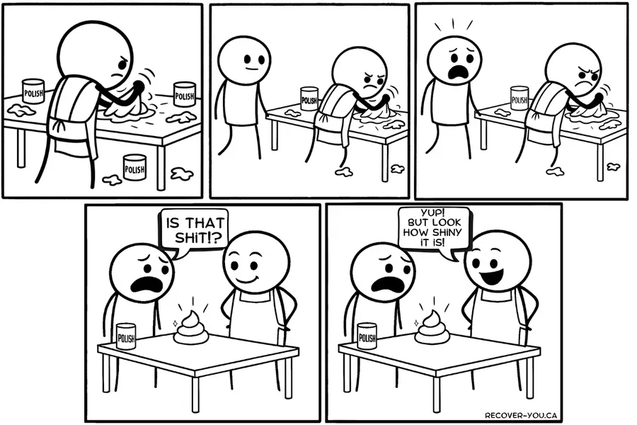
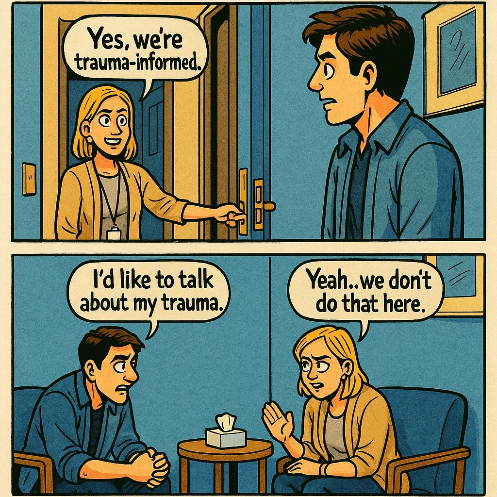

"Trauma-informed care" has become one of the most used phrases in addiction treatment. It has also become one of the least meaningful. Most programs carrying that label aren't trauma-informed. They're trauma-avoidant. And the people running them often know it.
For anyone trying to heal from addiction, that's not a minor gap in service delivery. A facility that doesn't offer trauma-specific therapy — or a clear pathway toward it — isn't treating the condition. It's managing the symptoms while the wound stays open. That's not care. That's containment.
There are excellent centers that genuinely integrate trauma and addiction work — and they're worth seeking out. But they remain the exception in a field still more comfortable polishing the surface than examining what's underneath it.
For trauma survivors, this was never just about bad choices. It was about pain so deep that escape felt worth any consequence.
After more than two decades in active addiction and through thousands of conversations with people in active use and in recovery, one pattern endured: unresolved emotional pain — especially childhood trauma — is a major driver of addiction. Not a contributing factor. A driver.
of individuals in substance use treatment report histories of trauma. That's not coincidence. That's signal. (Including adverse childhood experiences: learn more here.)
One person can try a drug and walk away; another spirals. The difference isn't willpower. It's whether there's a wound deep enough that escape feels worth the cost.
The most authentic moments I've experienced in treatment didn't happen in group or in a therapist's office. They happened quietly and unceremoniously — late at night, or off in a corner somewhere — between people who had built enough trust to mean it. There's a point where words stop being managed. An unspoken understanding settles, and both of you decide it's safe enough to tell your truth:
Sometimes what comes out is almost unbearable to hear. Stories of emotional, physical, or sexual abuse. People hurt by strangers, parents, friends, partners. People who witnessed or endured things no one should ever have to see or experience.
And when the truth finally surfaces, it's astonishing — in retrospect — to realise how close we really were without even knowing it. Looking back now, I can see that in those moments we were already ninety percent there and completely oblivious: standing at the threshold, the point where real work could begin if someone knew how to catch it. But no one does. So it passes. And what could have been a breakthrough becomes what it always does: two hopeless, uninformed addicts swapping war stories in the dark.
"Are you going to talk to someone about it?"
Nine times out of ten, the answer is some version of: "Screw that, I don't want to talk about that shit."
And the tenth? They’ll say yes — not because they mean it, but because they want the conversation to end.
We get defensive — and why wouldn't we? When someone asks if we're going to talk to someone about our deepest wounds, it can feel invasive, even threatening. It's not arrogance; it's protection. Of course we shut down. Especially when we don't have a damn clue where to take it, or understand the very real cost of leaving it buried.
The only reason I finally faced mine was education — being fortunate enough to learn the science of how unprocessed trauma keeps the body and brain locked in survival mode. Knowledge gave it shape. It turned avoidance into something I could actually work with.
We can't, nor should we attempt, to force people to relive their trauma.
But treatment centres fail critically when they don't teach why processing trauma is essential to recovery. If someone had shown me the science — the studies, the data, the actual evidence — I would have faced it sooner. I'm certain of it. Recovery culture is saturated with spirituality, metaphor, and cliché. It's easy to say "I get it" when you don't — and no one, maybe not even you, is the wiser. You can echo the right phrases. You can spin a compelling story. You can look like someone doing the work without doing any of it. But real evidence, once you actually understand it, is harder to outrun. It removes the comfortable ambiguity. It makes the cost of continued avoidance visible in a way that stock phrases never could. And that's exactly what treatment centres should be putting in the room.

If people believe they can keep shoving it down, they will. Until the weight of what's buried pulls them back under.
Trauma-avoidance isn't compassion.
It's abandonment dressed as care.
Addiction is neither a choice nor an inherited disease, but a psychological and physiological response to painful life experiences.
— Gabor Maté, In the Realm of Hungry Ghosts (2008)
For years I couldn't understand why my friends could stop after a night out while I kept disappearing for days. What I eventually had to accept — and what nearly cost me my life before I did — was that they weren't escaping anything. I was. For them, the hangover outweighed the fun. For me, the escape outweighed the crash. Every. Single. Time.
These weren't unusual disclosures. They were nearly universal. In room after room, across years of treatment and recovery, the same story kept surfacing in different words. Addiction is often the medication for wounds that never healed.

What "trauma-informed" often means in practice is:
These are meaningful steps. But when "trauma-informed" becomes a reason to avoid trauma entirely, the label stops describing the care and starts covering for the absence of it.
If unresolved trauma fuels relapse, how can we justify tiptoeing around it? Not naming it doesn't protect people. It abandons them with the same wounds that drove them to substances in the first place.
This avoidance isn't always deliberate. Some of it is under-resourcing. Some of it is genuine uncertainty about how to hold what comes up. But some of it is something harder to excuse:
Good intentions don't heal pain. Pain left unaddressed becomes relapse waiting to happen. Whatever the reason for the gap, that consequence doesn't change.
If a treatment centre claims to focus on "what happened to you," then there must be clear, accessible pathways to clinical, trauma-specific therapy. Without that, it's marketing language wrapped around avoidance.
These are the questions the system should be answering. The fact that it isn't is not an oversight. It's a choice.
Until those questions get real answers, treatment will keep failing the very people it claims to serve. Not missing the mark. Failing them. The ones using substances not to party, but to survive unbearable pain.
These questions weren't being asked out loud. That's why this site exists.
Recover-You exists because behaviour management is not recovery. Because polishing the surface isn't compassion — it's a way of avoiding the work while still collecting the credit.
Lasting recovery requires going to the root. This site exists to make sure the next person doesn't have to wait as long as I did to find out what the root actually is.
Follow the next step in order, or branch out into related topics.
These sources highlight the evolution of trauma-informed care, the documented gap between its principles and its implementation, and why moving from accommodation to actual trauma processing is the necessary next step for systems serious about durable recovery outcomes. Educational only — not medical advice.